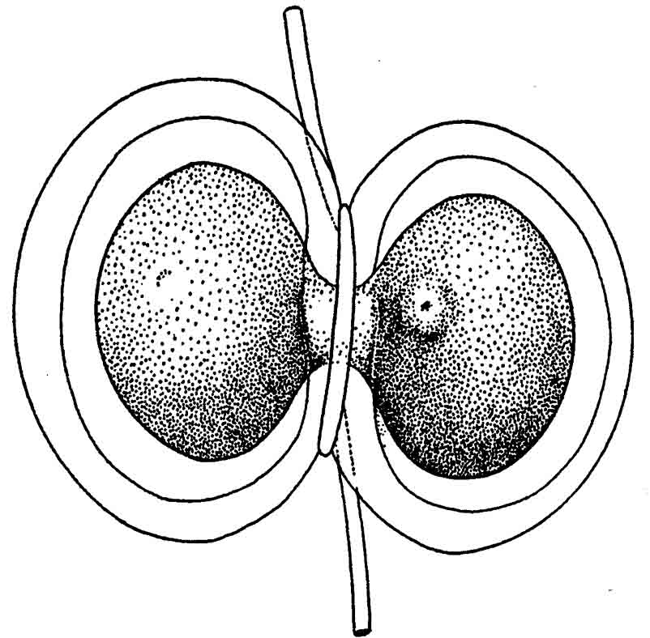
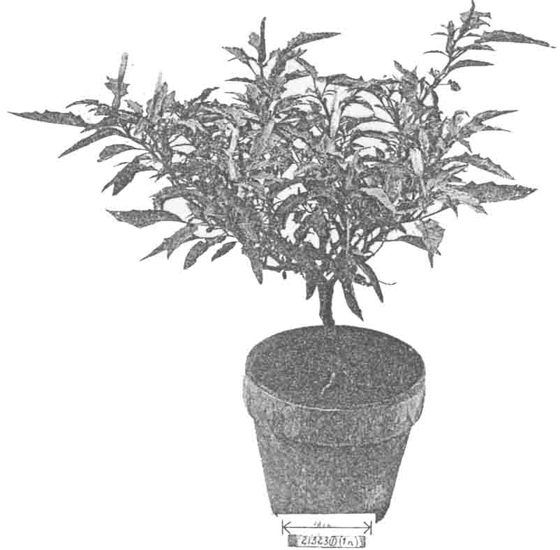
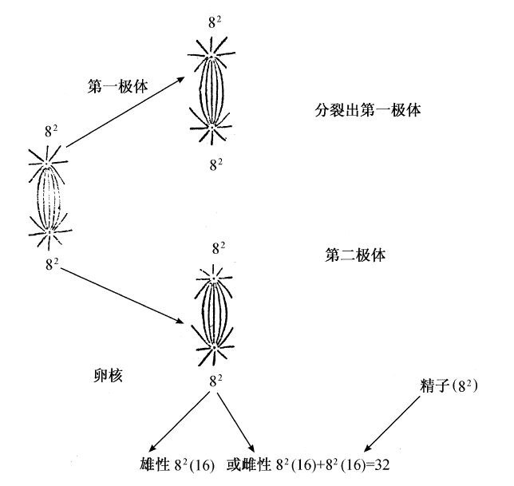
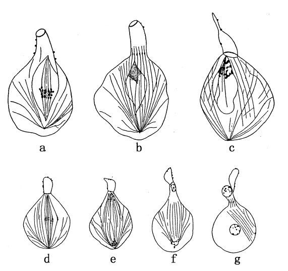
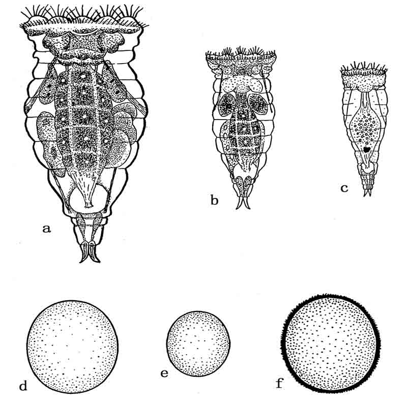

第10章 单倍体
遗传学证据指明：至少要有一整组的染色体，才能进行正常的发育。胚胎学证据也证明：一组染色体为发育所必需。但不能由此断言，就所涉及的发育条件来说，单倍染色体能够直接代替二倍染色体而不发生严重的后果。
曼陀罗的花和果实果蝇的生活史。
遗传学证据证明：至少要有一整组的染色体，才能进行正常的发育。含一组染色体的细胞可以称为haploid（单倍型）。由这种细胞所组成的个体有时称为haplond（单倍体）或者引申一下，常常称为haploid（单倍体或单倍型）。胚胎学证据也证明：一组染色体为发育所必需。但不能由此断言，就所涉及的发育条件来说，单倍染色体能够直接代替二倍染色体而不发生严重的后果。
卵子经过人工刺激后可以发育成胚胎，这种胚胎细胞只有一组染色体，但由于卵子在开始发育前，胞质的分裂受到抑制，以致染色体增加到两倍的，也不在少数，而且比单倍体生活得更好一些。
切一片海胆卵子，使其同一条精子受精，便能够得到一个含有父方单组染色体的胚胎。Spemann和以后的Baltzer在蝾螈（Triton）卵子受精后，立刻中缢卵子，有时能够分离出一片只含一个精核的卵子胞质（图83），其中有一个被Baltzer培养到变态时期。

图83 蝾螈卵子在受精后立刻中缢为二，右半边示极体（仿Spemann）
用X射线或镭射线在足够的时间内照射蛙卵，损伤或破坏其染色体，然后，像Oscar Hertwig和Gunther Hertwig所证明的，使之受精，这些受精卵也可以发育成含半组染色体的细胞所组成的胚胎。反之，蛙精子在照射后虽然可以进入卵子，但对于发育不能再有作用。在这些情况下，卵子只有卵核的单组染色体，可以进行染色体的分裂而无胞质的分裂，从而在发育开始以前恢复了染色体的总数。这些卵子经过胚胎时期，发育成为正常的蝌蚪。
用以上各种方法所产生的人工单倍体，大多数都是衰弱的。在大多数例子里，它们在未达成年时早已夭折。其原因不明，但可以考虑几种可能性。如果用人工方法，刺激含有单倍型胞核的整个卵子，使之进行单性发育，又如果在开始分化（器官形成）前，该卵分裂次数和正常卵的相等，那么，就细胞体积对于所含的染色体数目之间的比例来说，它的每一个细胞的体积势必是正常细胞的两倍。细胞既然依靠它的基因来进行发育，因此，也可能由于基因物质欠缺，以致对于两倍大的胞质不能产生正常的效应。
另一方面，这种卵子如果在开始分化以前，比正常卵多分裂一次，那么，染色体数目（即胞核体积）与其细胞体积，便会维持正常的比例——整个胚胎便会比正常胚胎有两倍多的细胞，也有两倍多的胞核。胚胎作为一个整体说来，会含有和正常胚胎同样多的染色体总数。至于该例中较小的细胞体积，对于发育过程，究竟有多大影响，目前还不明了。根据单倍体上细胞体积方面的观察，似乎表明细胞体积如常，胞核却只有正常核的一半。看来，胚胎还没有像刚才谈的那样校正它的胞核胞质关系。
人工单倍体的衰弱是否由于细胞体积正常而基因欠缺这个问题，或者可能从另一方面来决定。含一个精核的半个卵子，如果经过了正常卵子那样多的分裂次数，则胚胎细胞和其胞核之间，将会维持正常的体积比例。事实上，这一类的海胆胚胎早已知道了。它们变成看来是正常的长腕幼虫，但是还没有一个超过了这个阶段，因为由于某种原因，甚至正常胚胎在人工条件下也难培养到这个阶段以后，因此，这些单倍体的生活力是否和正常胚胎一样，还不明确。Boveri和其他学者广泛地研究了海胆卵子的断片，大多数断片也许小于半个卵子。Boveri断定：在原肠形成时期以前或者紧接原肠形成时期之后，大多数单倍体都夭折了。这些断片可能始终没有从手术中完全恢复过来，或者它们没有包含胞质所有的重要成分。
这些胚胎如果同正常二倍型卵子的裂球隔离后所形成的胚胎比较一下，便有若干有兴趣之点。当海胆卵子分裂为二细胞，四细胞或八细胞时，可以用无钙海水处理，把这些裂球各个分离开来。这里并没有手术上的损伤，每个细胞都有双组的染色体。然而有许多1/2裂球发育不正常，1/4裂球中能发育成长腕幼虫的更少，至于1/2裂球能超过原肠形成时期的，也许一个也没有。这个证据表明：除染色体数目和胞核胞质比例以外，小体积本身也有不利的影响。我们不明白这究竟意味着什么，但表面和体积之间的关系，随着细胞的大小而异，这也可能是上述结果中的一个因素。
根据这些实验看来，在已经适应于二倍体状态的物种中，要用人工方法减少卵子胞质来取得正常的生活茁壮的单倍体，是没有多大希望的。不过在自然条件下，存在着几个例子的单倍体；有一个例子，其二倍体物种的单倍体还存活到了成年。
Blakeslee在栽培的曼陀罗里发现了一株单倍体（图84）。他细心保护这株植物，并且把它嫁接到二倍体植物上面，维持达数年之久。除了产生极少数单倍型花粉以外，这株植物在所有主要性状上，都和正常植株相似。所产生的花粉粒都是在拼命渡过成熟时期以后才得到了一组染色体的。

图84 一株单倍体的曼陀罗（仿Blakeslee，载在《遗传学》杂志里）
根据Clausen和Mann（1924）的报导：在烟草Nicotiana Tabacum和Nicotiana sylvestris杂交中，出现了两株单倍型烟草，各有24条染色体，为Tabacum种的单倍数目。有一株单倍体等于亲型Tabacum“变种”的“缩小复制品”，不过性状表现得稍为夸大一些。该株高约为亲型的3/4，叶小，枝细，花也显然小一些。它没有亲型那么健壮，花朵茂密，但不结种子。花粉完全残缺。另一株单倍体对于它的Tabacum亲型变种，表现了同样的关系。这两株单倍体的花粉母细胞经历了不规则的第一次成熟分裂，少数或多数染色体走到两极，剩下的则滞留在纺锤体的赤道上。第二次成熟分裂比较规则一些，但落后的染色体仍未能到达任何一极。
在父母任一方为二倍体的两物种里，自然似乎已经成功地产生了少数的单倍体。蜜蜂、黄蜂和蚁类的雄虫都是单倍体。后蜂的卵子有16条染色体（注：根据Nachtsheim的观察和解释：未成熟的蜂卵原有32条染色体，但由于染色体两两密切接合，所以看来只有16条。实际上，每一条都是“双染色体”或二价染色体。在成熟分裂开始以前，16条二价染色体又两两接合成8条“四价染色体”。经过减数分裂，成熟卵子各得8条二价染色体，实际上是16条单价染色体。精母细胞原有16条单价染色体，因为没有减数分裂，所以成熟精子仍然各得16条单价染色体。雄蜂由卵子单性发育而成，所以只有16条单价染色体（单倍体）。后蜂和职蜂各由受精卵发育而成，所以有32条染色体。
图85中，染色体数字8 2 ，在第一次分裂时指八条四价染色体而言，在第二次分裂时则指八条二价染色体而言。——译者注。），在接合后形成八条二价染色体（图85）。两次成熟分裂发生后，染色体减为八条。卵子如果受精，即发育成雌性（后蜂或职蜂），有二倍数目的染色体；卵子如果不受精，则以半数的染色体进行单性发育。
取雌雄两种蜜蜂的各种组织，检查其胞核体积与细胞体积（Boverr、Mehling、Nachtsheim），证明了二倍体与单倍体之间的差别，一般是不恒定的。不过，在雌蜂和雄蜂的早期胚胎时期里，有一种特别现象，使情况稍为复杂。在雌雄胚胎细胞内，每一条染色体似乎是分开成为两个部分，染色体增加到开始时的两倍。在雌性胚胎细胞中也发生了同样的过程，而且染色体甚至再度重复，以致看起来也有了32条染色体。这项证据似乎指示了染色体实际上并未增多，只是各自“断裂”而已。如果这是一个正确的解释，则基因数目也没有一点增加。雌蜂的染色体仍然是雄蜂的两倍。这种断裂作用对于胞核大小，究竟有什么关系（如果有的话），目前还不明了。

图85 示蜜蜂卵子的两次成熟分裂。图下部示卵子同精子受精以后，染色体各分裂为二，使数目加倍
在雌雄两者的germ-track内，似乎没有发生断裂作用，如果发生了的话，这些断片在成熟时期前早已重新联合了。
细胞在成熟时期中的行动，是最好的证据，用来说明雄蜜蜂是一个单倍体，或者至少它的生殖细胞是单倍型。第一次成熟分裂流产了（图86a、b）。一个不完全的纺锤体形成起来，上面有八条染色体。一部分胞质分离出来，其中没有染色质。第二纺锤体发生了，染色体各自分裂（图86d~g），料想是借着纵裂进行的，半数的子染色体走到各极。从较大的细胞里分出一个小细胞来。大细胞变成有作用的精子，含有单倍数目的染色体。
据说，锥轮虫Hydatina senta的雄虫为单倍体（图87c），雌虫为二倍体。在营养条件恶劣的情况下，或者用原生动物Polytoma饲养时，只出现雌轮虫。雌虫为二倍体，它的卵子最初也是二倍型。每个卵子只分出一个极体——每条染色体分裂成相同的两半。因此，借单性发育成为雌虫的卵子，仍然保留了全部的染色体。如果用别种食物（例如眼虫），便会出现一种新型的雌虫。如果当该虫从卵壳孵出时即从一个雄虫受精，则所产生的卵子都是有性的，每个卵子放出两个极体，保留了单倍数目的染色体。已经进入卵内的精核，同卵核联合，形成二倍体雌虫，雌虫重新开始一个单性繁殖的谱系。但是，上述的特种雌虫如果不受精，便会产生较小的卵子；卵子放出两个极体，多份保留了半数的染色体，以后经过单性发育，形成雄性单倍体。雄虫在孵出后数小时便已成熟，不再生长，几日内死去。

图86 雄蜜蜂生殖细胞的两次成熟分裂（仿Meves）

图87 a.锥轮虫Hydatina senta的单性繁殖的雌虫；b.同样的幼年雌虫；c.同样的雄虫；
d.单性繁殖的卵子；e.发育成雄虫的卵子；f.冬季卵（仿Whitney）
Schrader证明雄性白“蝇”Trialeurodes vaporariorum是单倍体。A.W.Morrill发现：在美国，该蝇未经交尾的雌虫，只能产生雄性后代，Morrill和Back在同科的另一种中，也看到了同一现象。另一方面，Hargreaves和Williams先后报导，在英国，同种雌性白蝇未交尾时只产生雌虫。1920年，Schrader研究美国种的染色体：雌虫有22条，雄虫有11条。成熟卵子原有11条二价染色体。两极体被放出后，卵内只留下11条单价染色体。卵子受精，另添精核的11条染色体。未受精的卵子则进行单性发育，其胚胎细胞各有11条染色体。当雄虫的生殖细胞成熟时，看不出一点减数分裂的痕迹（甚至像蜜蜂那样的微弱过程也没有），它的均等分裂同精原细胞的分裂没有区别。
如Hindle的繁育实验所启示的，有些证据表明，未受精的虱卵发育成为雄虱。有一种恙虫Tetranychus bimaculatus，其未受精的卵子发育成雄虫，受精的卵子发育成雌虫（依据几个观察者的报导）。Schrader（1923）证明过雄虫为单倍体，只有三条染色体；雌虫为二倍体，有六条染色体。卵巢内的卵子最初有六条染色体，以后，染色体两两接合，形成三条二价染色体。卵子受精时，增加了三条染色体，结果造成雌虫的六条染色体。未受精的卵子则直接发育成为雄虫，其细胞内各有三条染色体。
A.F.Shull研究过一种蓟马Anthothrips verbasci的雌虫，在未交尾时，未受精的卵子只能发育为雄虫。雄虫多半是单倍体。
藓类和苔类的原丝体以及藓类的植株世代（即配子体）都是单倍体。Wettstein用人工方法使原丝体细胞得出二倍型原丝体和二倍型藓类植株。这个结果证实了这个世代和孢子体世代两者间的差异，不是由各世代所有的染色体的数目所造成的，而是在这样意义上的一种发育现象，就是孢子必须经过配子体状态才能达到孢子体世代。